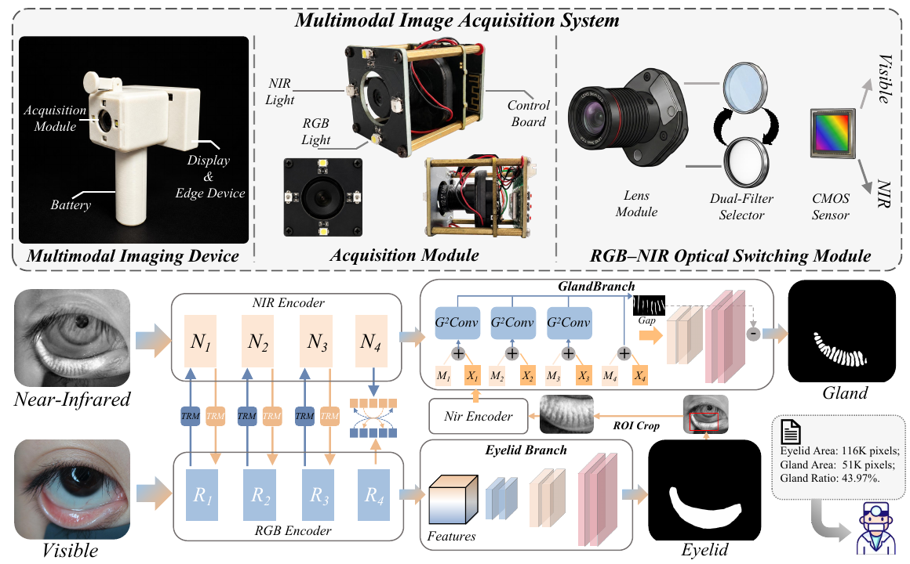
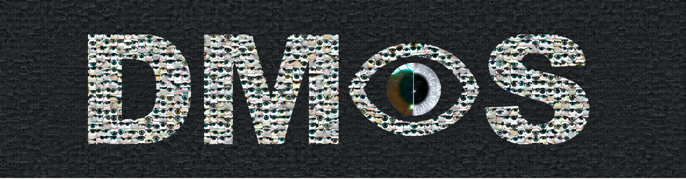
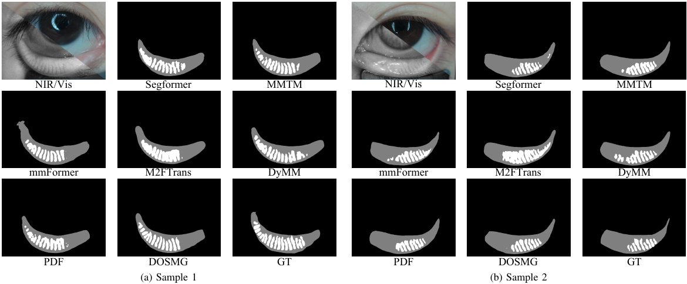

Shared optical path
A portable device switches visible and 850 nm NIR illumination and filters, capturing paired images approximately 150 ms apart.
DMOS · Dual-Modal Ocular Surface

A portable device switches visible and 850 nm NIR illumination and filters, capturing paired images approximately 150 ms apart.
Task-aware residual modulation (TRM) in DAOS combines RGB-dominant eyelid features with NIR-dominant gland features.
Eyelid ROI processing, high-resolution gland injection, and Gland-Gap Convolution (G2Conv) combine global context, adaptive curvilinear sampling, and gap supervision to preserve gland continuity and separation.

DAOS results reported in the manuscript. Values are mean ± standard deviation over three random seeds (0, 1, and 2), in %.
| Dataset | Eyelid Dice ↑ | MG Dice ↑ | clDice ↑ | detF1 ↑ |
|---|---|---|---|---|
| DMOS | 94.567 ± 0.050 | 77.650 ± 0.098 | 85.277 ± 0.108 | 56.573 ± 1.133 |
| MGD1K | 97.430 ± 0.053 | 83.150 ± 0.040 | 91.540 ± 0.066 | 41.273 ± 0.070 |
On DMOS, DAOS improves MG Dice and clDice over the strongest multimodal fusion baseline by 2.350 and 2.354 percentage points, respectively. For MGD1K, the same image is fed into both encoders to evaluate single-modality segmentation.

Provisional manuscript citation; publication details will be updated when confirmed.
@unpublished{wang_dmos,
title = {A Dual-Modal Visible and Near-Infrared Imaging System for Ocular Surface Analysis},
author = {Wang, Zhiwei and Zhu, Meilu and Lee, Allie and Li, Yuxing and Lam, Edmund Y.},
note = {Manuscript}
}